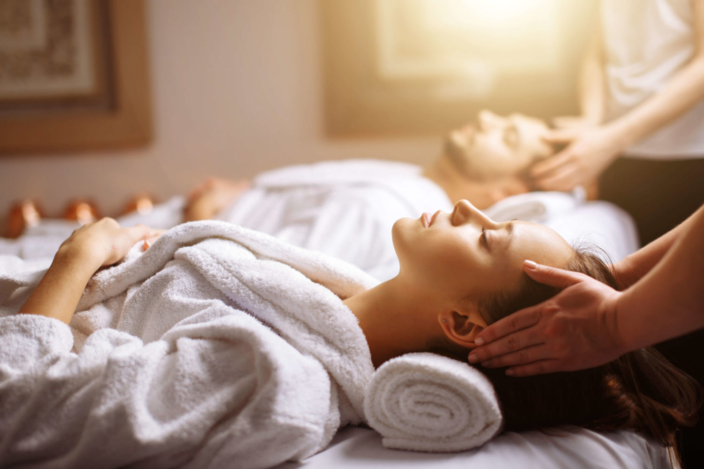
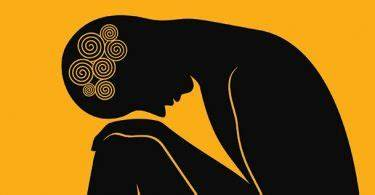
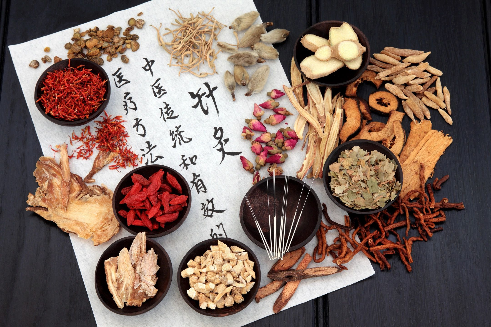

Assessing The Effectiveness Of Alternative And Complementary Therapies
Complementary and alternative therapies emphasize a comprehensive approach to health and well-being, taking into account the physical, mental, emotional, and spiritual aspects of an individual. These therapies often focus on promoting self-care, preventive measures, and lifestyle modifications to optimize health outcomes.The field of CAM(Complementary and Alternative Medicine) is dynamic, and the acceptance and usage of specific therapies can vary across different regions and cultural contexts.
'Complementary' describes treatments which you may use alongside other treatments.Examples of complementary therapies include massage therapy, chiropractic care, herbal medicine, meditation, yoga, aromatherapy, and mind-body techniques. These therapies may be used to manage pain, reduce stress, enhance relaxation, improve sleep, promote overall wellness, and support the body's natural healing processes. 'Alternative' describes approaches that replace the treatments offered by your doctor.Some examples of alternative therapies include homeopathy, naturopathy, traditional Chinese medicine, and energy healing modalities.
* Massage therapy :

Massage therapy is a hands-on therapeutic technique that involves the manipulation of soft tissues in the body to promote relaxation, alleviate muscle tension, improve circulation, and enhance overall well-being. It is a form of bodywork that has been practiced for thousands of years and is widely recognized for its physical and mental health benefits.
Massage therapists use a variety of techniques and modalities to address different needs and preferences of individuals.This therapy can provide numerous physical benefits. It helps to relieve muscle tension, reduce pain and stiffness, improve flexibility and range of motion, enhance blood circulation.
Massage can also support rehabilitation from injuries and assist in the management of chronic conditions.Massage therapy is widely recognized for its ability to induce relaxation and reduce stress. The soothing touch, rhythmic movements, and the release of tension in the muscles can help calm the nervous system, lower heart rate and blood pressure, and trigger the relaxation response. Massage can also promote better sleep quality and alleviate symptoms of anxiety and depression.Massage therapy can be received in various settings, including spas, wellness centers, clinics, or even in the comfort of one's own home.
* Chiropractic care :
Chiropractic care is a healthcare discipline that focuses on diagnosing, treating, and preventing disorders of the musculoskeletal system, particularly those related to the spine.The fundamental principle of chiropractic care is that the body has the inherent ability to heal itself and maintain optimal health.Chiropractic treatments typically involve the use of hands-on techniques, such as spinal adjustments, joint mobilization, and soft tissue manipulation. Chiropractors may also incorporate other therapeutic modalities, including ultrasound, electrical stimulation, heat or cold therapy, exercise prescription, and lifestyle counseling.This process is commonly sought for various musculoskeletal conditions, such as back pain, neck pain, headaches, sciatica, and sports injuries. It is also utilized to address issues related to posture, mobility, and overall wellness.
* Herbal medicine :
Herbal medicine is a practice that utilizes plant-based remedies to promote health and treat various health conditions.It operates on the belief that plants contain active constituents that have specific pharmacological effects on the body.This remedy is made from various parts of plants, such as leaves, flowers, roots, or bark. They are typically prepared as teas, tinctures, capsules, or topical applications.Herbal medicine offers a wide range of potential benefits, including alleviating symptoms, supporting the immune system, promoting relaxation, improving digestion, and enhancing overall well-being. Many herbs have been studied for their pharmacological properties and have shown promising results in scientific research.
* Meditation :
Meditation is a practice that involves training the mind to focus and redirect thoughts. It is often used as a tool for relaxation, stress reduction, and achieving a sense of inner calm and clarity.One of the most common forms of meditation is mindfulness meditation. It involves intentionally bringing attention to the present moment, observing thoughts, feelings, and sensations without judgment.If stress has you anxious, tense and worried, consider trying meditation. Spending even a few minutes in meditation can help restore your calm and inner peace.Meditation emphasizes the connection between the mind and the body. By calming the mind and reducing stress, meditation can have a positive impact on physical health. It is often used as a complementary practice in conjunction with medical treatments for various health conditions.Regular practice of meditation has been found to reduce stress, improve focus and concentration, promote emotional resilience, enhance self-awareness, and foster a sense of inner peace. It may also have positive effects on blood pressure, immune function, and overall cardiovascular health.
* Yoga :
Yoga is a mind and body practice that can build strength and flexibility. It may also help manage pain and reduce stress. Various styles of yoga combine physical postures, breathing techniques, and meditation.It promotes physical, mental, and spiritual well-being by improving strength, flexibility, balance, relaxation, mindfulness, and overall health. Yoga is accessible to people of all ages and fitness levels and can be adapted to individual needs. It emphasizes the mind-body connection and fosters a sense of harmony and balance. Regular practice of yoga can have numerous benefits for physical and mental well-being.
* Aromatherapy :
Aromatherapy is a holistic healing treatment that uses natural plant extracts to promote health and well-being. Sometimes it’s called essential oil therapy. Aromatherapy uses aromatic essential oils medicinally to improve the health of the body, mind, and spirit. It enhances both physical and emotional health.This therapy can be experienced through inhalation or topical application of essential oils. It offers various benefits such as stress reduction, relaxation, mood enhancement, and improved overall well-being. Safety precautions should be followed, and individual responses may vary.Aromatherapy is thought of as both an art and a science. Recently, aromatherapy has gained more recognition in the fields of science and medicine.
* Mind-Body techniques :

Mind-body techniques refer to a variety of practices that involve the connection between the mind and the body to promote overall health and well-being.These techniques include relaxation, hypnosis, visual imagery, meditation, biofeedback, cognitive–behavioral therapies, group support, and spirituality as well as expressive arts therapies such as art, music, or dance.Some techniques, such as support groups and counselling, have now become part of standard cancer care. Spiritual practices are included because of the important part they play in many people's lives and their value in providing emotional support.Scientific studies suggest that mind–body techniques can benefit people who have cancer by reducing the symptoms and side effects of cancer and its treatment.Clinical studies have shown that art therapy helps manage symptoms of fatigue and anxiety. Anecdotal evidence suggests that it improves coping skills, emotional wellbeing and quality of life.Laughter yoga, or laughter therapy, combines laughter-based activities, clapping and breathing into an exercise routine to encourage overall health and wellbeing.Research shows laughter has a positive impact on our physical and mental wellbeing and can stimulate the release of endorphins, the feel-good hormones.Life coaching is a type of counselling in which a coach works with a client to set goals and work out ways to change their life to achieve them.This allows people to make positive changes to their future personal, spiritual, physical and professional lives.Mindfulness meditation means paying attention to the present moment by focusing on the breath and observing each rise and fall.Studies on mindfulness meditation show it helps improve the quality of life of people.
These mind-body techniques can be used for various purposes, including stress reduction, pain management, improving mental well-being, enhancing performance, and promoting self-awareness. They are often practiced alongside conventional medical treatments to support overall health and complement other therapeutic interventions.
* Homeopathy :
Homeopathy is a medical system based on the belief that the body can cure itself. Those who practice it use tiny amounts of natural substances, like plants and minerals. They believe these stimulate the healing
process.Homeopathy takes a personalized approach, considering the person as a whole and aiming to stimulate self-healing. Remedies are chosen based on individual symptom patterns, and the practice is generally considered safe. Consulting a qualified healthcare professional is recommended for personalized advice.
* Naturopathy :
Naturopathy is a form of healthcare that combines modern treatment with traditional methods. It includes alternative, natural therapies to modern medicine.Naturopathic treatment plans focus on education and prevention. They often emphasize diet, exercise, and stress management.Naturopathic doctors design medical care plans to suit individual needs and health conditions. This means the treatment plans they offer can vary, but they all follow similar principles.Most treatments include food and nutritionTrusted Source. A naturopathic doctor will customize recommendations for the individual. It is important to consult with a qualified naturopathic practitioner for personalized advice and to ensure safe and appropriate treatment.It is important to consult with a qualified naturopathic practitioner for personalized advice and to ensure safe and appropriate treatment.
* Traditional Chinese medicine :

Traditional Chinese medicine (TCM) is an alternative medical practice drawn from traditional medicine in China. It is based on the concept of achieving balance and harmony within the body, and it views health as the result of a harmonious interaction between various aspects of an individual, including the body, mind, and spirit.TCM has been used for a wide range of health conditions and is valued for its holistic approach, individualized care, and emphasis on prevention. However, it is important to consult with a qualified TCM practitioner for personalized advice and to ensure safe and appropriate treatment.
For each of these therapies, it is recommended to consult a qualified healthcare professional for personalized advice and guidance.
Health | Wellness | Existence | Body | Mind | Evidence | Research | Thursday | June 22,2023